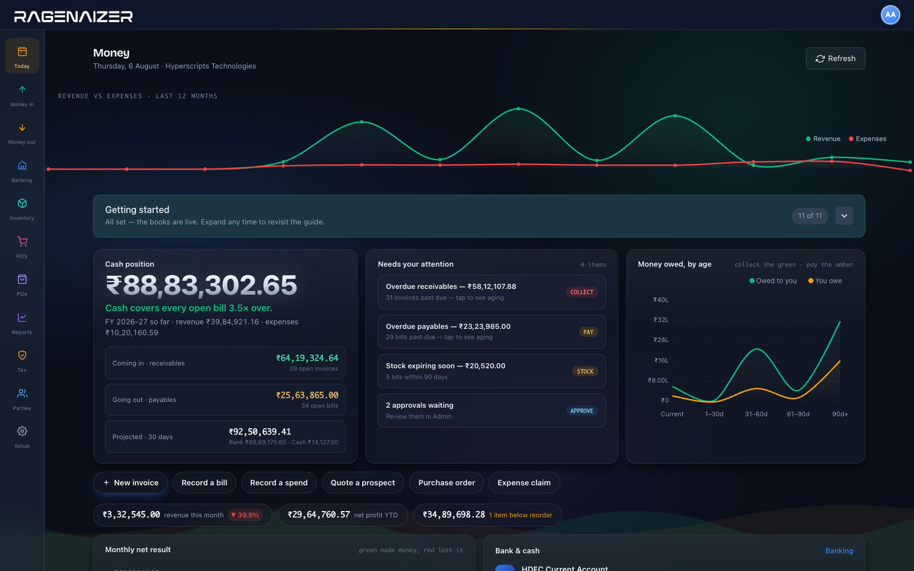

Invoices, bills, purchase orders, stock, work orders, counter sales and payroll all write their own entries. Batches and expiry, bills of material, a till and an ecommerce website are served by the same engine as the ledger — not four systems you reconcile on a Friday.
One module, 4 products. Sold separately almost everywhere else as books, inventory, expenses and an ecommerce API.
Pick a document below and watch what it does to the ledger
The document
What it posts, the moment it is approved
Debits · Credits
The actual product
This is the first screen after you sign in.
Cash position, what is owed to you and by whom, what is going out, and the four things that need a decision today — before you have opened a single report.

Money — cash position, receivables and payables ageing, and the month's revenue against expenses.
Built for the trade, not just the books
Batches, work orders, a counter and a website.
Most accounting software stops at the invoice and hands you off to a second system for stock, a third for the shop floor and a fourth for the website — then asks you to reconcile all four. This is one engine. Pick how you sell.
Not a light invoicing tool with an accounting label on it. Receivables through to year-end close, with the awkward parts — depreciation, metered billing, period locks, statutory returns — actually built rather than left to a spreadsheet.
ReceivablesBranded invoices, partial payments across several invoices at once, customer statements, and an ageing report that tells you exactly who to chase.
PayablesVendor bills, scheduled payments, part payments and an AP ageing. Vendor statements reconcile cleanly against the supplier's own books.
Purchase ordersRaise, approve, send, receive, then convert a received PO straight into a vendor bill. Numbered, and visible at every step of the way.
EstimatesProforma invoices with no financial effect until the customer accepts — then one click turns the estimate into a real, posted invoice.
InventoryBatches, expiry dates, multiple locations and FIFO layers — with stock movements and the ledger kept in agreement rather than reconciled after the fact.
BankingEvery bank account wired to its GL account, inter-bank transfers, and reconciliation in three steps. Razorpay and Stripe receipts arrive on signed webhooks.
TaxGST, VAT and TDS configured per country, with an HSN and SAC library. GSTR-1, GSTR-3B and TDS reports over any date range, and one-click India setup.
Fixed assetsA register per asset with its own schedule, depreciation run in a batch that posts itself, and disposals with the gain or loss already worked out.
ExpensesPer-category policies, itemised claims from the people who spent the money, approval, then reimbursement that books its own entry.
Recurring & meteredSubscriptions that raise the next invoice for everything due in one batch, usage meters for what customers actually consumed, and prepaid wallets.
ReportsTrial balance, P&L, balance sheet, cash flow, day book, cash book, ledger and both ageings — every one of them off the same set of postings.
Period closeFiscal years and periods you can lock so nobody backdates into a closed month, a closing checklist with line-item sign-off, and a clean year-end run.
Audit trailEvery posting, approval, reversal and deletion captured with the user, the timestamp and the before and after values. Export the lot for the auditor.
Multi-currencyBill in rupees, dollars and euros off one chart of accounts. Currency sits on the invoice, bill, PO, asset and journal — no second instance to run.
BudgetsSet a budget against an account, a cost centre or a project and watch actuals move against it, rather than finding out at the period close.
Cost centresTag spend and revenue to a department, branch or activity, so a profit-and-loss can be cut by the part of the business that produced it.
Loans and advancesMoney lent out or taken on, with a schedule, the interest and the repayments posting to the ledger themselves instead of being remembered.
Offers that reach the ledgerCoupons, gift cards, buy-X-get-Y and trade schemes priced at the point of sale — and posted correctly, so a discount is an entry in the books rather than a number someone typed over the total.
A shop on the same ledgerMerch is a free storefront you host yourself and point at these books with one API key — so an online order writes the same GST invoice and the same ledger entry as a sale at the counter, with no export in between.
Where the stock came fromPurchase orders here can start life as an RFQ rather than a typed-in bill — and from receipt onward the goods are costed, traced and built without leaving the ledger. Follow one order end to end →
Approvals with SLAsSales and procurement request a new client or vendor, finance clears it from one queue, and the SLA report shows breach rate and average review time.
In detail
A page for each of them.
Everything above has its own page, written against the code. Where something is not built, the page says so.
The reason books go wrong is rarely the accounting. It is the retyping between the system that made the promise and the system that has to account for it. Here there is nothing in between.
01
Deal marked won — the customer record is created here, tags and owner intactCRM → Accounts
no re-keying
02
Milestone hit — raise the invoice against that same customer, not a lookalikeProjects → Accounts
2 clicks
03
Purchase order received — the vendor bill is waiting, on the same vendor masterProcurement → Accounts
same GSTIN
04
Payroll finalised — salary journal posted, statutory dues raised as bills to payHRMS → Accounts
0 spreadsheets
05
Period locked — the month is closed and stays closedAccounts
signed off
5 products, one set of books0 integrations to maintain
Straight answers
The things people ask on the first call.
01
Is this real double-entry accounting?
Yes. Everything is a balanced journal against a proper chart of accounts — not an invoice list with a report bolted on. The engine refuses to post an entry whose debits and credits do not match, at both the line level and the entry header, so an unbalanced entry cannot exist in the ledger.
That is why the trial balance ties without being coaxed, and why the section at the top of this page can show you the entry behind any document.
02
Does stock agree with the books?
By construction. A stock movement and its ledger entry are the same posting, not two systems reconciled afterwards. The inventory account is maintained at weighted-average cost by the module itself — purchases debit it, sales credit it with the matching cost of goods sold — so its balance always equals the stock valuation report.
03
Can we run more than one currency?
Yes, off one chart of accounts. Currency sits on the invoice, bill, purchase order, asset and journal, with the exchange rate recorded on the document. Realised gains and losses post to their own account when a foreign receipt clears.
04
Can somebody backdate into a closed month?
Not once the period is locked. Fiscal years and periods lock explicitly, there is a closing checklist with line-item sign-off, and year-end close is a run rather than a convention. Reopening is itself an action with a name against it.
05
What can an auditor actually be given?
Every posting, approval, reversal and deletion is captured with the user, the timestamp and the before and after values, and the whole trail exports. Reversals are recorded rather than performed by deleting the original.
06
Is it GST-ready, or does that mean a CSV?
GSTR-1 with a JSON export, GSTR-3B, TDS and TDS-receivable reports over any date range, an HSN and SAC library, and one-click India setup. Tax configuration is per country, so the same engine handles VAT elsewhere.
E-invoicing is built but sits behind a GSP connection — we will not pretend it is switched on until yours is.
07
Are we locked in?
No. Your chart of accounts imports from CSV on the way in, every report exports on the way out, and the audit trail exports whole. Nothing about your books is held in a format only we can read.
08
Who is this actually for?
Businesses that hold stock and would otherwise run two systems — pharma distribution, manufacturing, wholesale, a retail counter, an ecommerce website — plus any services business that wants its projects, payroll and books in one place. See the panel above for what each of those gets.
Stop running the business on spreadsheets.
Move to books the rest of your company already writes into — and see the entry behind every number.
This is one module of the business OS, not a point tool. Accounts on its own does what is usually sold as four separate products: books, inventory, expenses and an ecommerce API. The same seat opens Meetings, Mail, Chat, Drive, CRM, HR, Accounts, Projects, Procurement, Learning and Research — eleven modules covering about twenty-eight products' worth, on one login, one permission model and one ledger. You are not buying an accounting package; you are putting the company on one system.